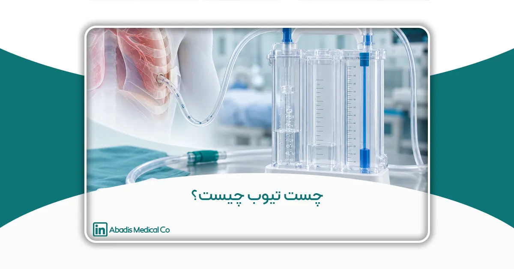
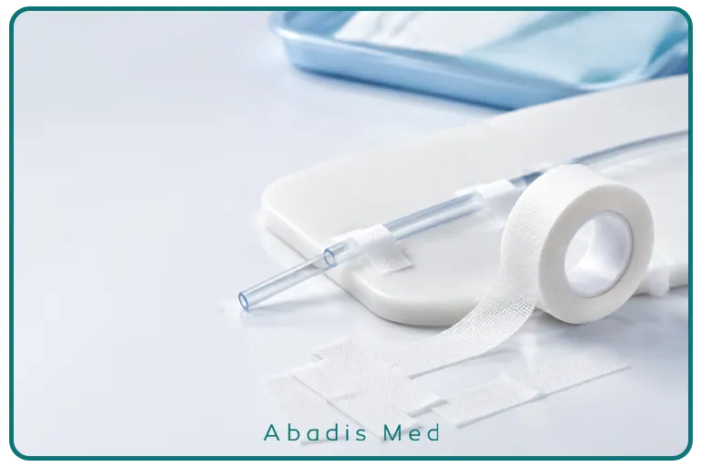
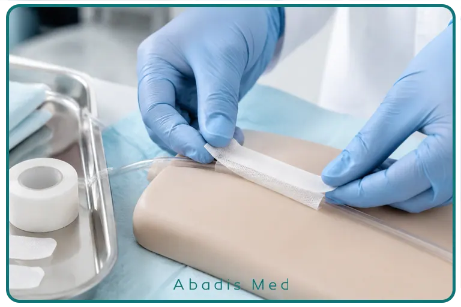
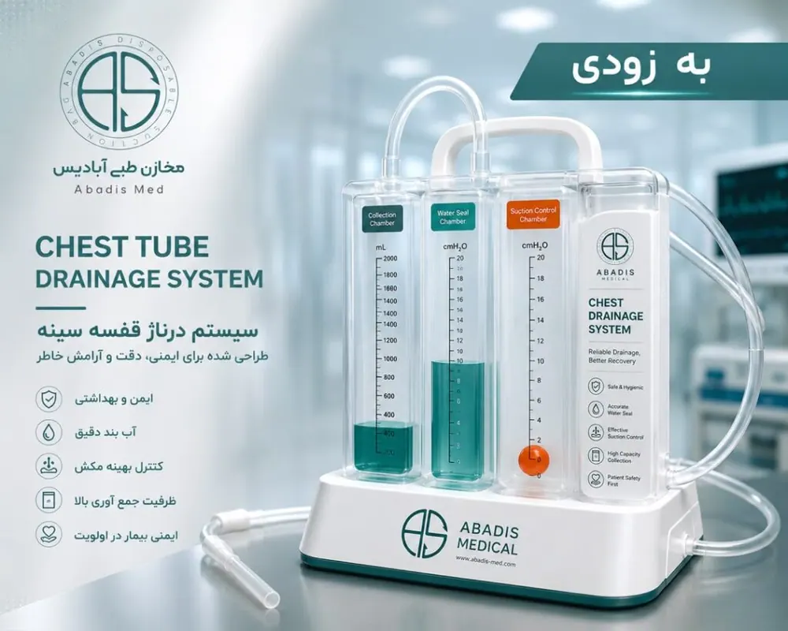

چست تیوب چیست؟ بررسی کاربرد، انواع و نقش آن در درمان بیماران تنفسی و جراحی
مقدمه
سیستم تنفسی یکی از حیاتیترین بخشهای بدن انسان است و عملکرد صحیح ریهها نقش مستقیمی در تأمین اکسیژن مورد نیاز بافتها و حفظ حیات دارد. ریهها برای انجام فرآیند تنفس، نیازمند فضای مناسبی در داخل قفسه سینه هستند که به آن فضای پلور (Pleural Space) گفته میشود. هرگونه تجمع غیرطبیعی هوا، خون یا مایع در این فضا میتواند عملکرد طبیعی ریه را مختل کرده و در برخی شرایط، یک وضعیت اورژانسی برای بیمار ایجاد کند.
در بسیاری از بیماریها و شرایط بالینی مانند پنوموتوراکس (Pneumothorax)، هموتوراکس (Hemothorax)، تجمع مایع پلورال، عفونت فضای پلور و همچنین پس از برخی جراحیهای قلب و قفسه سینه، نیاز به تخلیه محتویات غیرطبیعی فضای پلور وجود دارد. یکی از مهمترین تجهیزات پزشکی که برای این هدف مورد استفاده قرار میگیرد، چست تیوب (Chest Tube) یا لوله درناژ قفسه سینه (Thoracic Drainage Tube) است.
چست تیوب با ایجاد یک مسیر کنترلشده برای خروج هوا و مایعات اضافی، به بازگشت فشار طبیعی فضای پلور، باز شدن مجدد ریه و بهبود وضعیت تنفسی بیمار کمک میکند. این تجهیز معمولاً به یک سیستم جمعآوری و درناژ متصل میشود که وظیفه کنترل جریان خروجی، جلوگیری از برگشت هوا و مایعات، و حفظ ایمنی فرآیند درمان را بر عهده دارد.
با توجه به اهمیت این سیستم در شرایط حساس پزشکی، انتخاب تجهیزات استاندارد، طراحی مناسب مخزن جمعآوری و عملکرد مطمئن سیستم درناژ، نقش مهمی در افزایش ایمنی بیمار و کاهش عوارض احتمالی دارد.
در این مقاله، به بررسی کامل چست تیوب، کاربردها، انواع، نحوه عملکرد سیستم درناژ قفسه سینه، ویژگیهای تجهیزات استاندارد و اهمیت استفاده از سیستمهای ایمن در مراکز درمانی میپردازیم.
چست تیوب چیست؟
چست تیوب (Chest Tube) یک لوله پزشکی انعطافپذیر و استریل است که از طریق ایجاد یک مسیر دسترسی در دیواره قفسه سینه، وارد فضای پلور میشود تا هوا، خون، مایعات یا ترشحات غیرطبیعی را از این فضا خارج کند.
این روش که در اصطلاح پزشکی با نام Tube Thoracostomy یا Chest Drain Insertion شناخته میشود، یکی از روشهای رایج در درمان مشکلات مرتبط با قفسه سینه است و توسط پزشکان متخصص در شرایط مختلف بالینی انجام میشود.
چست تیوب معمولاً از مواد پزشکی انعطافپذیر مانند پلیمرهای سازگار با بدن ساخته میشود تا ضمن حفظ انعطافپذیری، مقاومت کافی در برابر خمشدگی، انسداد و آسیب مکانیکی داشته باشد.
یک سیستم کامل چست تیوب معمولاً شامل اجزای زیر است:
- Chest Tube (لوله قفسه سینه): مسیر اصلی انتقال هوا و مایعات از فضای پلور
- Drainage Catheter: بخش انتقالدهنده ترشحات به سیستم جمعآوری
- Chest Drainage Unit: مخزن یا سیستم جمعآوری مایعات خروجی
- Water Seal Chamber: محفظه آببندی برای جلوگیری از برگشت هوا
- Suction Control Chamber: بخش کنترل فشار مکش در سیستمهای دارای ساکشن
مجموعه این اجزا در کنار یکدیگر یک سیستم بسته و کنترلشده ایجاد میکنند که امکان تخلیه ایمن محتویات فضای پلور را فراهم میسازد.

آشنایی با فضای پلور و اهمیت آن در عملکرد ریه
برای درک بهتر نقش چست تیوب، ابتدا باید با ساختار فضای پلور آشنا شویم.
ریهها توسط دو لایه نازک به نام پلور (Pleura) پوشیده شدهاند:
- پلور احشایی (Visceral Pleura): لایهای که مستقیماً سطح ریه را پوشش میدهد.
- پلور جداری (Parietal Pleura): لایهای که سطح داخلی دیواره قفسه سینه را میپوشاند.
بین این دو لایه، فضای بسیار کوچکی وجود دارد که به آن فضای پلورال (Pleural Space) گفته میشود. در حالت طبیعی مقدار کمی مایع در این فضا وجود دارد که باعث کاهش اصطکاک هنگام حرکت ریهها در زمان تنفس میشود.
این فضا همچنین دارای فشار منفی نسبی است که برای باز نگه داشتن ریهها ضروری است.
اما در شرایطی مانند ورود هوا یا تجمع مایع، تعادل طبیعی این فضا از بین میرود.
برای مثال:
- ورود هوا به فضای پلور باعث ایجاد پنوموتوراکس میشود.
- تجمع خون باعث ایجاد هموتوراکس میشود.
- تجمع مایع اضافی باعث افیوژن پلورال (Pleural Effusion) میشود.
در این شرایط، فشار ایجادشده میتواند باعث فشرده شدن ریه و کاهش توانایی آن در تبادل گازها شود. چست تیوب با خارج کردن این مواد اضافی، به بازگشت شرایط طبیعی کمک میکند.
چرا استفاده از چست تیوب ضروری است؟
هدف اصلی استفاده از چست تیوب، ایجاد یک مسیر ایمن برای تخلیه محتویات غیرطبیعی فضای پلور است. بدون تخلیه مناسب، تجمع هوا یا مایع میتواند باعث مشکلات جدی تنفسی و حتی تهدید حیات بیمار شود.
مهمترین اهداف استفاده از چست تیوب عبارتاند از:
۱. بازگرداندن فشار طبیعی فضای پلور
وجود هوا یا مایع اضافی در فضای پلور میتواند فشار منفی مورد نیاز برای باز شدن ریه را کاهش دهد. چست تیوب با تخلیه این مواد، شرایط مناسب برای انبساط دوباره ریه را فراهم میکند.
۲. بهبود عملکرد تنفسی بیمار
زمانی که ریه تحت فشار قرار میگیرد، ظرفیت تنفسی کاهش پیدا میکند. تخلیه مناسب فضای پلور میتواند باعث بهبود اکسیژنرسانی و کاهش علائم تنفسی شود.
۳. جلوگیری از تجمع مجدد مایعات
در برخی بیماران، تولید مایع یا هوا در فضای پلور ادامه دارد. سیستمهای درناژ قفسه سینه امکان تخلیه مداوم و کنترلشده این مواد را فراهم میکنند.
۴. کنترل شرایط پس از جراحی
پس از برخی جراحیهای قلب، ریه و قفسه سینه، احتمال تجمع خون یا مایعات در اطراف ریه وجود دارد. استفاده از چست تیوب در این شرایط به جلوگیری از عوارض بعد از عمل کمک میکند.
کاربردهای اصلی چست تیوب در پزشکی
چست تیوب یکی از پرکاربردترین تجهیزات در پزشکی اورژانس، جراحی قفسه سینه، مراقبتهای ویژه و مراقبتهای پس از عمل است. هدف اصلی این وسیله، تخلیه هوا، خون یا سایر مایعات از فضای پلور و بازگرداندن عملکرد طبیعی ریه است. بسته به شرایط بیمار، پزشک ممکن است از چست تیوب در موارد مختلفی استفاده کند.
۱. پنوموتوراکس (Pneumothorax)
پنوموتوراکس زمانی رخ میدهد که هوا وارد فضای پلور شود. این هوا باعث از بین رفتن فشار منفی طبیعی اطراف ریه شده و در نتیجه ریه بهصورت نسبی یا کامل روی هم میخوابد (Collapse).
پنوموتوراکس ممکن است در اثر عوامل مختلفی ایجاد شود، از جمله:
- آسیبهای نافذ یا غیرنافذ قفسه سینه
- شکستگی دنده
- پارگی خودبهخودی حبابهای هوایی ریه
- برخی بیماریهای ریوی مانند COPD
- عوارض برخی اقدامات پزشکی
در این شرایط، چست تیوب هوای تجمعیافته را تخلیه کرده و به باز شدن مجدد ریه کمک میکند.
۲. هموتوراکس (Hemothorax)
هموتوراکس به تجمع خون در فضای پلور گفته میشود. این وضعیت معمولاً در اثر:
- تصادفات شدید
- ضربه به قفسه سینه
- جراحیهای قلب و ریه
- پارگی عروق
ایجاد میشود.
وجود خون در فضای پلور علاوه بر فشرده کردن ریه، میتواند باعث کاهش حجم خون مؤثر بدن نیز شود. چست تیوب امکان خروج خون، پایش میزان خونریزی و تصمیمگیری بهتر برای ادامه درمان را فراهم میکند.
۳. افیوژن پلورال (Pleural Effusion)
در برخی بیماریها، مایع بیش از حد در فضای پلور تجمع پیدا میکند.
از جمله مهمترین علل عبارتاند از:
- نارسایی قلبی
- سرطانهای ریه و پلور
- بیماریهای کبدی
- بیماریهای کلیوی
- بیماریهای التهابی
اگر حجم مایع زیاد باشد، بیمار دچار تنگی نفس و کاهش ظرفیت تنفسی میشود.
در چنین شرایطی، چست تیوب میتواند برای تخلیه مداوم مایع مورد استفاده قرار گیرد.
۵. کیلوتوراکس (Chylothorax)
در برخی بیماران، مایع لنفاوی (Chyle) در فضای پلور تجمع پیدا میکند.
این مشکل ممکن است در اثر:
- آسیب مجرای لنفاوی
- جراحیهای قفسه سینه
- برخی سرطانها
ایجاد شود.
در این بیماران نیز چست تیوب برای تخلیه مایع لنفاوی استفاده میشود.
۶. مراقبت پس از جراحیهای قلب و قفسه سینه
تقریباً تمام بیمارانی که تحت جراحیهای بزرگ قفسه سینه قرار میگیرند، پس از عمل به چست تیوب نیاز دارند.
از جمله:
- جراحی قلب باز
- جراحی بایپس عروق کرونر
- تعویض دریچه قلب
- لوبکتومی
- پنومونکتومی
- جراحیهای توراکوسکوپی (VATS)
در این بیماران، چست تیوب وظیفه تخلیه خون، ترشحات و هوا را بر عهده دارد تا از ایجاد فشار روی ریه و قلب جلوگیری شود.

انواع چست تیوب
چست تیوبها بر اساس قطر، طراحی، کاربرد و جنس، انواع مختلفی دارند.
از نظر قطر (French Size)
اندازه چست تیوب معمولاً بر حسب French (Fr) بیان میشود.
بهطور کلی:
- 10–14 Fr → برای پنوموتوراکس و مایعات کمحجم
- 16–24 Fr → برای بیشتر بیماران
- 28–36 Fr → برای هموتوراکس و خونریزیهای شدید
- 36–40 Fr → در جراحیهای بزرگ قلب و توراکس
انتخاب سایز مناسب بر اساس شرایط بیمار و نظر پزشک انجام میشود.
از نظر طراحی
چست تیوب مستقیم (Straight Chest Tube)
رایجترین نوع مورد استفاده
مناسب برای تخلیه هوا یا مایع
چست تیوب زاویهدار (Right-Angle Chest Tube)
این مدل بیشتر در جراحی قلب استفاده میشود.
قرارگیری مناسبتر در فضای مدیاستن از مزایای آن است.
پیگتیل کاتتر (Pigtail Catheter)
یک کاتتر باریک با انتهای حلقهای است.
در سالهای اخیر برای درمان بسیاری از پنوموتوراکسها و افیوژنهای کوچک جایگزین چست تیوبهای بزرگ شده است.
مزایا:
- درد کمتر
- برش کوچکتر
- راحتی بیشتر بیمار
سیستم درناژ قفسه سینه چگونه کار میکند؟
خود چست تیوب به تنهایی قادر به تخلیه ایمن هوا و مایعات نیست.
برای عملکرد صحیح، این لوله به یک سیستم درناژ قفسه سینه (Chest Drainage System) متصل میشود.
این سیستم معمولاً از سه بخش اصلی تشکیل شده است.
۱. محفظه جمعآوری (Collection Chamber)
این بخش محل تجمع:
- خون
- ترشحات
- مایع پلور
- سایر مایعات خروجی
است.
وجود درجهبندی دقیق روی مخزن به پزشکان اجازه میدهد حجم مایع خروجی را بهصورت مستمر پایش کنند.
این اطلاعات در تصمیمگیری درمانی اهمیت زیادی دارد.
۲. محفظه واتر سیل (Water Seal Chamber)
این قسمت مهمترین بخش سیستم درناژ محسوب میشود.
عملکرد آن شبیه یک دریچه یکطرفه است.
واتر سیل اجازه میدهد:
هوا از قفسه سینه خارج شود.
اما اجازه برگشت هوا به فضای پلور را نمیدهد.
این ویژگی برای باز شدن مجدد ریه کاملاً ضروری است.
وجود حباب در این قسمت میتواند نشاندهنده خروج هوا از فضای پلور باشد و در برخی موارد نشانه نشت هوا (Air Leak) تلقی میشود.
۳. سیستم کنترل مکش (Suction Control)
در بسیاری از بیماران، تخلیه طبیعی کافی نیست.
در این شرایط از فشار منفی کنترلشده استفاده میشود.
سیستم ساکشن باعث میشود:
- تخلیه سریعتر انجام شود.
- ریه زودتر باز شود.
- مایع با سرعت مناسب خارج گردد.
امروزه بسیاری از سیستمهای جدید به جای محفظه آب، از سیستمهای خشک (Dry Suction System) استفاده میکنند که دقت بالاتر، صدای کمتر و کنترل آسانتری دارند.
تفاوت سیستمهای یکمحفظهای، دومحفظهای و سهمحفظهای
امروزه سیستمهای چست درین در سه طراحی اصلی تولید میشوند.
سیستم تکمحفظهای
سادهترین مدل
مناسب برای شرایط محدود
امروزه کمتر استفاده میشود.
سیستم دومحفظهای
دارای:
- محفظه جمعآوری
- واتر سیل
این مدل هنوز در بسیاری از مراکز درمانی مورد استفاده قرار میگیرد.
سیستم سهمحفظهای
پیشرفتهترین نوع سیستم
شامل:
- Collection Chamber
- Water Seal
- Suction Control
تقریباً تمام بیمارستانهای مدرن از این سیستم استفاده میکنند.
نقش مخزن چست تیوب در ایمنی بیمار و موفقیت درمان
اگرچه لوله چست تیوب مسیر خروج هوا و مایعات را فراهم میکند، اما بخش اصلی مدیریت این ترشحات بر عهده سیستم درناژ قفسه سینه (Chest Drainage System) و مخزن جمعآوری آن است. در واقع، عملکرد صحیح کل سیستم به اندازه کیفیت و طراحی مخزن وابسته است.
مخزن چست تیوب تنها یک ظرف برای جمعآوری مایعات نیست؛ بلکه یک بخش فعال از فرآیند درمان به شمار میرود که وظایف متعددی از جمله حفظ فشار مناسب، جلوگیری از بازگشت هوا، اندازهگیری حجم ترشحات و کمک به پایش وضعیت بیمار را بر عهده دارد.
در صورتی که این سیستم بهدرستی طراحی نشده باشد یا کیفیت مناسبی نداشته باشد، احتمال بروز مشکلاتی مانند برگشت هوا به فضای پلور، نشت مایعات، اختلال در عملکرد سیستم درناژ و حتی افزایش خطر عفونت وجود خواهد داشت.
به همین دلیل، در تمامی مراکز درمانی معتبر، انتخاب سیستمهای استاندارد درناژ قفسه سینه یکی از الزامات مهم ایمنی بیمار محسوب میشود.
ویژگیهای یک سیستم استاندارد Chest Drainage
پیشرفت فناوری تجهیزات پزشکی موجب شده است که سیستمهای امروزی چست تیوب از نظر ایمنی، دقت و سهولت استفاده تفاوت قابلتوجهی با نمونههای قدیمی داشته باشند.
یک سیستم استاندارد معمولاً باید ویژگیهای زیر را داشته باشد.
۱. طراحی کاملاً بسته (Closed Chest Drainage System)
یکی از مهمترین ویژگیهای سیستمهای مدرن، طراحی کاملاً بسته آنها است.
در این سیستمها، از لحظه خروج مایع یا هوا از فضای پلور تا زمان دفع، محتویات در یک مسیر بسته باقی میمانند.
مزایای این طراحی عبارتاند از:
- کاهش احتمال آلودگی محیط
- کاهش تماس کارکنان با خون و ترشحات
- کاهش خطر انتقال عوامل بیماریزا
- افزایش ایمنی بیمار و کارکنان درمان
امروزه استفاده از سیستمهای بسته، یکی از توصیههای مهم در دستورالعملهای کنترل عفونت محسوب میشود.
۲. اندازهگیری دقیق حجم ترشحات
یکی از مهمترین اطلاعاتی که پزشکان پس از جراحی یا در بیماران بدحال بررسی میکنند، حجم مایع خروجی از چست تیوب است.
به همین دلیل، مخزن باید دارای درجهبندی واضح و دقیق باشد تا امکان ثبت حجم ترشحات در ساعات مختلف فراهم شود.
این اطلاعات در موارد زیر اهمیت دارد:
- ارزیابی ادامه خونریزی
- تشخیص عوارض پس از جراحی
- تصمیمگیری برای خارج کردن چست تیوب
- بررسی روند بهبود بیمار
۳. جلوگیری از برگشت هوا (Anti-Reflux Mechanism)
بازگشت هوا به فضای پلور میتواند موجب اختلال در روند درمان شود.
سیستمهای استاندارد معمولاً از مکانیزمهای مختلفی برای جلوگیری از برگشت هوا استفاده میکنند.
وجود این قابلیت باعث میشود حتی هنگام جابهجایی بیمار نیز عملکرد سیستم حفظ شود.
۴. مقاومت در برابر نشتی
از آنجا که این سیستم با خون، مایعات بدن و ترشحات بیمار در تماس است، مقاومت بدنه و اتصالات اهمیت بسیار زیادی دارد.
استفاده از پلیمرهای پزشکی باکیفیت موجب میشود مخزن در برابر:
- شکستگی
- ترکخوردگی
- سوراخشدن
- نشت مایعات
مقاومت مناسبی داشته باشد.
۵. اتصالات ایمن
تمامی اتصالات لولهها باید به گونهای طراحی شوند که احتمال جدا شدن اتفاقی آنها به حداقل برسد.
قطع شدن مسیر درناژ ممکن است موجب:
- ورود هوا
- کاهش عملکرد سیستم
- آسیب به بیمار
شود.
به همین دلیل، کیفیت کانکتورها یکی از شاخصهای مهم انتخاب محصول است.
۶. خوانایی مناسب محفظهها
در محیطهای ICU و اتاق عمل، سرعت تصمیمگیری اهمیت بالایی دارد.
در نتیجه طراحی مخزن باید به گونهای باشد که:
- حجم مایع
- وضعیت واتر سیل
- وجود Air Leak
- عملکرد سیستم ساکشن
بهراحتی قابل مشاهده باشد.

نقش سیستم Chest Drainage در کنترل عفونت
کنترل عفونت یکی از مهمترین اهداف استفاده از سیستمهای مدرن درناژ قفسه سینه است.
در گذشته، برخی سیستمهای قدیمی احتمال بیشتری برای نشت خون و ترشحات داشتند که این موضوع میتوانست موجب آلودگی محیط و افزایش مواجهه کارکنان درمان با مایعات بالقوه عفونی شود.
در سیستمهای جدید، طراحی بسته و استفاده از اتصالات ایمن باعث کاهش قابلتوجه این خطرات شده است.
از دیدگاه کنترل عفونت، استفاده از تجهیزات استاندارد میتواند مزایای زیر را به همراه داشته باشد:
- کاهش تماس مستقیم کارکنان با ترشحات بیمار
- کاهش احتمال آلودگی محیط بیمارستان
- کاهش انتقال عوامل بیماریزا
- افزایش ایمنی فرآیند جمعآوری ترشحات
- تسهیل مدیریت پسماندهای مایع پزشکی
این موضوع بهویژه در بخشهایی مانند ICU، CCU، اتاق عمل و اورژانس اهمیت بیشتری پیدا میکند.
فناوریهای جدید در سیستمهای چست تیوب
در سالهای اخیر، شرکتهای تولیدکننده تجهیزات پزشکی تلاش کردهاند سیستمهای درناژ را هوشمندتر و ایمنتر کنند.
از جمله مهمترین فناوریهای جدید میتوان به موارد زیر اشاره کرد.
سیستمهای Dry Suction
در این سیستمها بهجای محفظه آب برای کنترل فشار مکش، از مکانیزمهای مکانیکی یا الکترونیکی استفاده میشود.
مزایا:
- دقت بیشتر
- صدای کمتر
- نگهداری آسانتر
- کاهش خطای کاربر
نمایشگرهای دیجیتال
برخی سیستمهای پیشرفته قادرند اطلاعات زیر را نمایش دهند:
- میزان نشت هوا
- فشار داخل سیستم
- حجم خروجی
- روند درمان
این اطلاعات به پزشکان در تصمیمگیری بالینی کمک میکند.
فیلترهای آنتیباکتریال
برخی مدلها دارای فیلترهایی هستند که از ورود آلودگی به سیستم جلوگیری میکنند و ایمنی بیشتری برای بیمار و تجهیزات فراهم میآورند.
طراحی ارگونومیک
سیستمهای جدید به گونهای طراحی میشوند که:
- حمل آسانتری داشته باشند.
- فضای کمتری اشغال کنند.
- احتمال واژگونی کاهش یابد.
- تعویض و نصب آنها سادهتر باشد.
اشتباهات رایج هنگام استفاده از چست تیوب
حتی بهترین تجهیزات نیز در صورت استفاده نادرست میتوانند باعث بروز عوارض شوند.
از جمله رایجترین خطاها میتوان به موارد زیر اشاره کرد:
- خم شدن یا پیچ خوردن لوله (Kinking)
- مسدود شدن مسیر درناژ با لخته خون
- قرار دادن مخزن بالاتر از سطح قفسه سینه بیمار
- جدا شدن ناخواسته اتصالات
- تخلیه یا دستکاری سیستم بدون رعایت اصول استریل
- تأخیر در بررسی حجم خروجی
- عدم ثبت دقیق اطلاعات در پرونده بیمار
رعایت پروتکلهای استاندارد و آموزش مستمر کارکنان درمانی میتواند احتمال وقوع این خطاها را به میزان قابلتوجهی کاهش دهد.
چگونه یک سیستم Chest Drainage استاندارد انتخاب کنیم؟
انتخاب یک سیستم درناژ قفسه سینه مناسب، تنها به انتخاب یک مخزن یا لوله محدود نمیشود. این سیستم بخشی از فرآیند درمان بیمار است و کیفیت آن میتواند بر ایمنی بیمار، عملکرد تیم درمان و حتی نتیجه درمان تأثیر مستقیم داشته باشد. به همین دلیل، مراکز درمانی هنگام خرید این تجهیزات باید مجموعهای از شاخصهای فنی، ایمنی و کیفی را مدنظر قرار دهند.
مهمترین معیارهای انتخاب عبارتاند از:
کیفیت مواد اولیه
سیستم باید از پلیمرهای Medical Grade و زیستسازگار تولید شده باشد تا علاوه بر استحکام مکانیکی، در تماس با مایعات بدن نیز عملکرد مطمئنی داشته باشد. استفاده از مواد اولیه باکیفیت، احتمال ترکخوردگی، نشت و تغییر شکل مخزن را کاهش میدهد.
طراحی کاملاً بسته (Closed System)
سیستمهای بسته خطر تماس کارکنان با خون و ترشحات بیمار را به حداقل میرسانند و احتمال آلودگی محیط را کاهش میدهند. این ویژگی بهویژه در اتاقهای عمل، بخشهای مراقبت ویژه و واحدهای اورژانس اهمیت زیادی دارد.
درجهبندی دقیق و خوانا
یکی از وظایف اصلی سیستم درناژ، امکان پایش حجم مایع خروجی است. بنابراین، وجود درجهبندی واضح و دقیق روی مخزن، ثبت اطلاعات و ارزیابی روند درمان را برای تیم پزشکی آسانتر میکند.
مکانیزم مؤثر جلوگیری از برگشت هوا
وجود سیستم ضدبازگشت (Anti-Reflux Mechanism) یکی از مهمترین ویژگیهای یک محصول استاندارد است. این قابلیت از ورود مجدد هوا به فضای پلور جلوگیری کرده و به حفظ عملکرد صحیح سیستم کمک میکند.
سازگاری با تجهیزات بیمارستان
سیستم انتخابی باید با تجهیزات و پروتکلهای درمانی مرکز درمانی سازگار باشد و امکان اتصال ایمن به انواع چست تیوب و تجهیزات ساکشن را فراهم کند.
سهولت استفاده
طراحی مناسب محصول باید نصب، حمل، تعویض و دفع آن را برای کارکنان درمانی ساده کند. هرچه استفاده از سیستم آسانتر باشد، احتمال بروز خطاهای انسانی نیز کاهش مییابد.
انطباق با استانداردهای تجهیزات پزشکی
محصول باید مطابق استانداردهای معتبر بینالمللی تولید شده و الزامات مربوط به تجهیزات پزشکی را رعایت کرده باشد. وجود مستندات فنی، کنترل کیفیت و قابلیت ردیابی محصول نیز از شاخصهای مهم در انتخاب تولیدکننده است.
نقش آموزش کارکنان در موفقیت درمان
حتی پیشرفتهترین تجهیزات پزشکی نیز بدون آموزش صحیح نمیتوانند حداکثر کارایی خود را داشته باشند. استفاده صحیح از سیستم چست تیوب نیازمند آشنایی کامل پزشکان، پرستاران و سایر اعضای تیم درمان با نحوه نصب، پایش و نگهداری این تجهیزات است.
برنامههای آموزشی منظم میتوانند نقش مهمی در کاهش خطاهای انسانی و افزایش ایمنی بیمار داشته باشند. این آموزشها معمولاً شامل موارد زیر هستند:
- اصول صحیح نصب و فیکس کردن چست تیوب
- بررسی عملکرد سیستم درناژ
- تشخیص نشت هوا (Air Leak)
- ارزیابی نوسانات محفظه Water Seal
- ثبت دقیق حجم و نوع ترشحات
- شناسایی علائم هشداردهنده مانند انسداد یا قطع مسیر درناژ
- نحوه جابهجایی ایمن بیمار همراه با سیستم درناژ
- رعایت اصول کنترل عفونت و استفاده از تجهیزات حفاظت فردی (PPE)
علاوه بر آموزش اولیه، بازآموزیهای دورهای و بهروزرسانی دستورالعملهای داخلی بیمارستان نیز نقش مهمی در حفظ کیفیت مراقبت از بیماران دارد.
آینده سیستمهای درناژ قفسه سینه
پیشرفت فناوری در حوزه تجهیزات پزشکی، مسیر توسعه سیستمهای چست تیوب را به سمت هوشمندسازی، افزایش ایمنی و بهبود تجربه کاربری هدایت کرده است. در سالهای اخیر، نسل جدید سیستمهای درناژ با قابلیتهایی مانند پایش دیجیتال، کنترل دقیق فشار، اندازهگیری خودکار نشت هوا و ثبت الکترونیکی اطلاعات معرفی شدهاند.
انتظار میرود در آینده، استفاده از حسگرهای هوشمند، ارتباط بیسیم با سیستمهای اطلاعات بیمارستانی (HIS) و تحلیل دادههای بالینی، امکان پایش دقیقتر وضعیت بیماران را فراهم کند. این پیشرفتها میتوانند به کاهش عوارض، کوتاهتر شدن مدت بستری و بهبود کیفیت مراقبت از بیماران کمک کنند.
جمعبندی
چست تیوب یکی از مهمترین تجهیزات مورد استفاده در درمان بیماریها و شرایطی است که با تجمع هوا، خون یا مایعات در فضای پلور همراه هستند. این وسیله با ایجاد یک مسیر ایمن برای تخلیه محتویات غیرطبیعی قفسه سینه، به بازگشت عملکرد طبیعی ریه و بهبود وضعیت تنفسی بیمار کمک میکند.
با این حال، موفقیت درمان تنها به قرار دادن چست تیوب محدود نمیشود. عملکرد صحیح سیستم درناژ قفسه سینه، کیفیت مخزن جمعآوری، وجود مکانیزمهای ایمنی مانند واترسیل و سیستم ضدبازگشت، و همچنین استفاده از تجهیزات استاندارد، همگی در دستیابی به نتایج درمانی مطلوب نقش اساسی دارند.
از سوی دیگر، رعایت اصول کنترل عفونت، آموزش مستمر کارکنان درمانی، پایش دقیق وضعیت بیمار و انتخاب تجهیزات تولیدشده مطابق استانداردهای تجهیزات پزشکی، از عوامل مهم در کاهش عوارض و افزایش ایمنی بیماران به شمار میروند.
در نهایت، انتخاب یک سیستم استاندارد Chest Drainage از تولیدکنندگان معتبر، سرمایهگذاری مؤثری در جهت ارتقای کیفیت خدمات درمانی، افزایش ایمنی بیماران و حمایت از عملکرد تیمهای درمانی خواهد بود.
منابع (References)
- British Thoracic Society (BTS). BTS Guideline for Pleural Disease.
- American Association for Thoracic Surgery (AATS). Guidelines for the Management of Thoracic Diseases.
- American College of Chest Physicians (CHEST). Clinical Practice Guidelines.
- Society of Thoracic Surgeons (STS). Clinical Practice Guidelines.
- Association of periOperative Registered Nurses (AORN). Guidelines for Perioperative Practice.
- Centers for Disease Control and Prevention (CDC). Guidelines for Infection Prevention in Healthcare Facilities.
- World Health Organization (WHO). Patient Safety and Infection Prevention Resources.
- PubMed – Peer-reviewed articles on Chest Tube, Pleural Drainage, Thoracostomy, and Chest Drainage Systems.
- European Respiratory Society (ERS). Clinical recommendations on pleural diseases.
- European Society of Thoracic Surgeons (ESTS). Consensus statements on thoracic drainage.